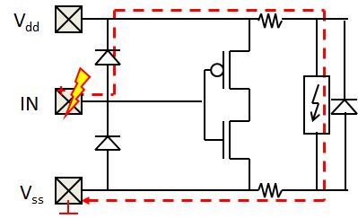
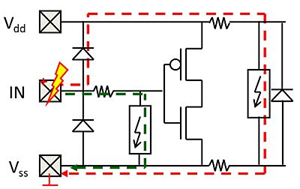
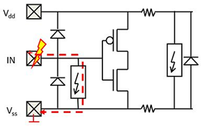
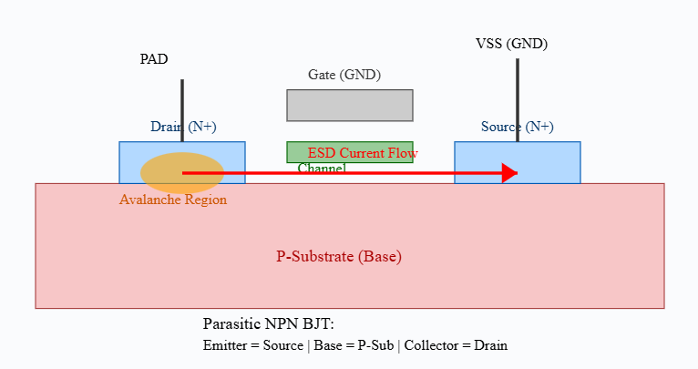
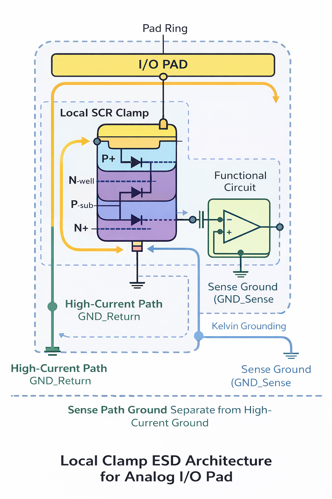

Local ESD Protection in Analog I/Os
1. Introduction
High-speed communication interfaces require minimal parasitic capacitance and strong ESD robustness.
Traditional dual-diode protection often becomes insufficient for sensitive analog and high-speed I/Os.
For high-speed interfaces, ESD protection must provide:
- Low capacitance
- Low leakage
- High voltage tolerance
- High robustness (HBM / IEC)
2. Traditional Dual-Diode ESD Approach
The conventional approach consists of:
- Diode from I/O to VSS
- Diode from I/O to VDD
- Rail clamp between VDD and VSS

Limitations
- Isolation resistance adds noise and degrades signal integrity
- Excess parasitic capacitance
- Voltage drop may exceed failure voltage of sensitive circuits
- Diode to VDD may not be allowed (fail-safe, hot-swap, overvoltage tolerant)
3. Isolation Resistance & Secondary Clamp
Sometimes a series resistance and a secondary clamp are added to protect sensitive nodes.

However, this increases signal distortion and is not ideal for high-speed interfaces.
4. Local Clamp ESD Concept
The local clamp approach replaces the traditional dual-diode concept with a dedicated clamp in the I/O region.



Key advantage: The diode between I/O and VDD can be removed when functionally required.
5. Technical Advantages of Local Clamp
- Reduced dependence on bus resistance
- Lower voltage drop during ESD stress
- No need for isolation resistor
- Lower parasitic capacitance
- Improved signal integrity
- Optimized per I/O pad
| Feature |
Traditional Dual Diode |
Local Clamp |
| Parasitic Capacitance |
Moderate to High |
Low |
| Voltage Tolerance |
Limited |
High |
| High-Speed Suitability |
Limited |
Excellent |
| Isolation Resistor Needed |
Often Yes |
No |
6. Applications
- SerDes
- HDMI / DisplayPort
- USB interfaces
- Automotive electronics
- Medical systems
- Cold-spare / Fail-safe systems
7. Design Considerations
- Optimize clamp trigger voltage
- Minimize parasitic capacitance
- Control leakage current
- Ensure compatibility with overvoltage tolerant interfaces
- Support high IEC robustness
Local clamp architecture enables high-speed performance while maintaining strong ESD protection.
Technical reference based on:
Local ESD Protection in Analog I/Os – Monthly Pulse